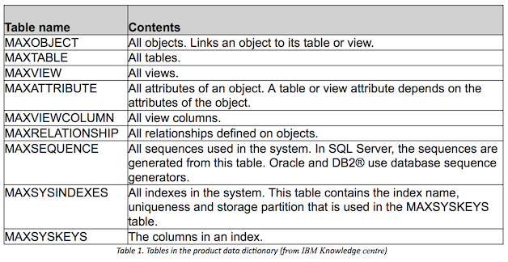
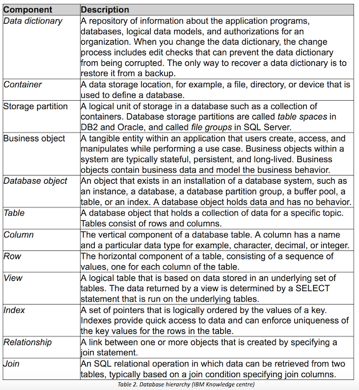

Background Reseach
Being beginners to data modeling and database theory, we were required to carry out research into key areas we will be working in. We also researched specific frameworks and tools that we would be using during development. We have shown our research below:
Data dictionaries (logical and physical)
Data dictionaries are defined by the IBM Dictionary of Computing, as a "centralized repository of information about data such as meaning, relationships to other data, origin, usage, and format."
Data dictionaries has several meanings which are in related to databases and database management systems (DBMS): “A document describing a database or collection of databases.” “An integral component of a DBMS that is required to determine its structure.” “A piece of middleware that extends or supplants the native data dictionary of a DBMS.”
Data dictionaries are data structures that can be used to metadata which structured data about information. Its main use for designers, users and administrators is for information resource management. It contains tables, which are created in the database by command files which are system generated according to its supporting back end DBMS.
An “authoritative data dictionary document that catalogues the organization, contents, and conventions of one or more databases” can be of great benefit for database users and application developers. It includes the “the names and descriptions of various tables (records or entities) and their contents (fields) and extra details like the type and length of each data element”.
Data dictionaries also provide information about the relationships between tables which can also be modelled in the form of Entity-Relationship diagrams. Constraint can be placed on the underlying data. For example, a ‘Range’ acts as a constraint on numeric data values.
Source: https://en.wikipedia.org/wiki/Data_dictionary
Data Dictionary Tables
Data dictionary tables of a relational database are used to store the structures of the database. The table below depicts the “product data dictionary tables”.
Relational Databases
A database that can be identified as a set of tables which can have changes made to it according to the relational model of data.
Each database consists of:
- “A set of system catalog tables that describe the logical and physical structure of the data.”
- “A configuration file containing the parameter values allocated for the database.”
- “A recovery log with ongoing transactions and archivable transactions.”
Below is a table from IBM illustrating the database hierarchy.
Data Models and Data Modelling
Data models are used to model the logical structure of the database to be used in the system being built. They define how data is connected to each other and how it is processed and stored in the system. We can think of data models as a flow chart - they illustrate relationships between data.
In order to do this. we can use diagrams and text to represent the way data will flow through the system in an easily understandable way. /p>
These data models are normally designed and created during the analysis and design stage as this ensures the requirements given are fully understood. /p>
Data modeling is a very important stage of the software cycle as well documented data models allow the client to find any errors easily and make necessary changes before any code is written./p>
Often, multiple models are used to view the same data as it ensures that all processes, entities and relationships have been identified. We can use several different approaches for this:
- Conceptual Data Modeling - identifies the highest-level relationships between different entities.
- Enterprise Data Modeling - similar to conceptual data modeling, but addresses the unique requirements of a specific business.
- Logical Data Modeling - illustrates the specific entities, attributes and relationships involved in a business function. Serves as the basis for the creation of the physical data model.
- Physical Data Modeling - represents an application and database-specific implementation of a logical data model.
Sources: http://searchdatamanagement.techtarget.com/definition/data-modeling, https://www.tutorialspoint.com/dbms/dbms_data_models.htm
Research Conclusion
Our background understanding of databases and other key topics has improved. This knowledge will help us immensely during development. Our research into frameworks and tools has provided us with a selection of options for developing the application.